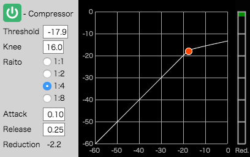

This demonstration site is an audio mixing application with Web Audio API. This application operates some basic functions for audio mixing as shown below.
The following figure shows "Transpose." According to the figure, Transpose has three parts: "Play Time", "Repeat Time", and "Window Select."
A time(e.g. "00:07:703" from the above figrue) next a right-pointing triangle means "play time." The time is changed automatically in playing audio. Also, this application can change the time with drag & drop operation for vertical at any time.
The buttons under "play time" control the time and to play/stop audio. Each button from left to right is as follows:
A time(e.g. "00:00:000" from the above figure) next a upper left triangle means "repeat start time" and a time(e.g. "00:10:000" from above the figure) next a upper right triangle menas "repeat end time." This application can change each time with drag & drop operation for vertical at any time.
The buttons: "Intro", "A", "B", "C", and "Outro" set repeat start/end time quickly. The name of each button means a part of the demo song used this application.
The buttons:"Track", "Mixer", and "Effector" change a current window to operate audio mixing. This application has shortcut keys instead of clicking these buttons.
The operations about "Transpose" are here.
The right figure shows "Inspector." Inspector displays the parameters of an audio channel(e.g. "t00_SynthBa"). Inspector controls as follows:
The operations about "Inspector" are here.
The following figure shows "Track." According to the figure, Track has "Time ruler", "Track lane", "Track menu", and so on.
Clicking the button "Mute" disables mute of all audio channels when the button colors yellow. Clicking the button "Solo" disables solo of all audio channels when the button colors green.
Clicking the button "auto scroll" scrolls "Time ruler" and all "Track lane" automatically when the button colors orange.
Also, clicking each button "+"/"-" respectively enlarges/reduces "Time ruler" and all "Track lane" for horizontal.
The operations about "Track" are here.
The right figure shows "Time ruler." According to the figure, Time ruler has two triangular marks.
The upper left triangle and the upper right triangle respectively mean the position for "repeat start time" and "repeat end time."
Also, Time ruler displays a region(blue band) between "repeat start time" and "repeat end time" in enabling repeat. The band colors blue when "repeat start time" is shorter than "repeat end time."
Meanwhile, the right figure shows an example when the region colors pink.
According to the figure, the region colors pink when "repeat start time" is longer than "repeat end time."
In this case, despite enabling repeat, this application doesn't repeat playback.
The operations about "Time ruler" are here.
The right figure shows one of "Track lane." According to the figure, the wave form of each audio displays here.
Also, the right figure shows one of "Track lane for automation." According to the figure, the data for automation display as squared markers here. This application can edit automation data with mouse operation.
The operations about "Track lane" are here. Also, the operations about "Track lane for automation" are here.
The right figure shows "Track menu." According to the figure, the menu contains an icon, a name of audio file(e.g. t00_SynthBa) and six buttons. Each button from left to right is as follows:
Also, the right figure shows "Track menu for automation." According to the figure, the menu contains a selector, four input-boxes, and six buttons.
The selector "TYPE" selects the type of automation. Selecting a type of automation changes the display about the corresponding track lane for automation. The four input-boxes "Time" and "Value" are used to edit an automation datum.
Each button("+", "-", "Del", "Add", "Move", and "Edit") from counterclockwise is as follows:
The operations about "Track menu/lane" are here. Also, the operations about "Track menu/lane for automation" are here.
The following figure shows "Mixer." According to the figure, Mixer contains two type mixers. One uses icons for audio. This application calls "Position Mixer" as mixing by using icons. The other is general type. This application calls it "General mixer."
The right figure shows "ICON SELECT." According to the figure, "ICON SELECT" contains 18 check-boxes and seven buttons.
Each check-box displays/hides the corresponding icon in the upper right area of Mixer. Also, the buttons select some check-boxes collectively. each button is as follows:
The following figure shows "Icon position." According to the figure, the position of icons means panning(horizontal) and volume(vertical) respectively. The left/right of panning are corresponding "L"/"R" of Icon position and the min/max of volume are corresponding "REAR"/"FRONT" of Icon position respectively. This is based on positions for musical instruments like orchestra.

Each icon in Icon position can move with drag & drop operation.
The following figure shows "General mixer." According to the figure, the layout is similar to general mixer.
The mixer for audio channel(e.g. "t00_SynthBa", "t01_Kick", ..., and "t17_Seq3") controls as follows:
Also, the mixer contains a channel for "OUTPUT." The channel outputs the mixed sounds for each audio channel. The mixer for "OUTPUT" channel controls as follows:
The operations about "Mixer" are here.
The following figure shows "Effect." According to the figure, Effect contains "Ch. SELECT", "EQ", and "Compressor."
The right figure shows "Ch. SELECT." According to the figure, Ch. SELECT selects an audio or "OUTPUT" channel to operate EQ and Compressor. Ch.SELECT contains a selector, two slide-bars, seven buttons, and three icons.
The selector "CURRENT" selects a channel to operate EQ and Compressor.
The slide-bars are as follows:
The buttons(C, M, S, R, P) are as follows:
The triangular buttons(left-pointed and right-pointed triangles) are as follows:
The icons("CURRENT", "PREVIOUS", and "NEXT") are as follow:
The operations about "CH. SELECT" are here.
The following figure shows "EQ." According to the figure, EQ contains a button, four check-boxes, a selector, three input-boxes and a graph.
Clicking the button like "power button" enables/disables the EQ function alternately. This application calls the button "EQ SW." Also, the button colors green/gray when the function enables/disable.
Clicking each check-box(Filter No.1,2,3, and 4) enables/disables each filter effect alternately and displays/hides the filter curve & marker in the graph. This application calls the graph "EQ spectrum." Also, the filter parameters(frequency, Q, and Gain) set the corresponding input-boxes after checked the box.
Clicking the selector(Filter type) sets the filter type as follows:
Operating with drag & drop for vertical on each input-boxes(Frequency, Q, and Gain) can change each value respectively.
Clicking a marker in EQ spectrum sets the corresponding parameters to input-boxes and operating the marker with drag & drop changes the value of frequency and gain in each input-box automatically.
The operations about "EQ" are here.
The following figure shows "Compressor." According to the figure, Compressor contains a button, four input-boxes, four radio-buttons, and a graph.
Clicking the button like "power button" enables/disables the compressor function alternately. This application calls the button "Compressor SW." Also, the button colors green/gray when the function enables/disable.
Operating with drag & drop for vertical on each input-boxes(Threshold, Knee, Attack, and Release) can change each value respectively.
Clicking each radio-button changes the value of ratio.
Operating the marker with drag & drop in the graph changes the value of threshold in the corresponding input-box automatically.
The operations about "Compressor" are here.
The right figure shows "FX Diagram." According to the figure, FX diagram shows the route of sound for the audio channel "CURRENT" assigned in Ch.SELECT.
"IN" means dry sound and "OUT" means wet/dry(bypassed all effects) sound.
The route from "IN" respectively passes/bypasses "EQ - Filters" when EQ SW colors green/gray. In the case of passing "EQ - Filters", the route passes each filter shown as an icon in FX Diagram.
Each icon shows a current filter type and respectively displays or hides when the corresponding check-box in EQ is checked or not.
Also, the route passed/bypassed "EQ - Filters" respectively passes/bypasses "Compressor" when Compressor SW colors green/gray.